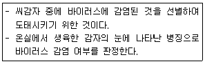
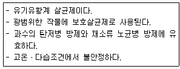
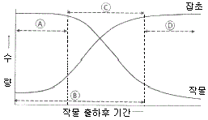

식물보호기사 (2019-04-27 기출문제)
1과목: 식물병리학
1. 감자 역병에 대한 설명으로 옳은 것은?
- 세균병이다.
- 토마토에도 발생한다.
- 2차 전염은 하지 않는다.
- 진딧물을 잡는 것이 최선의 방제 방법이다.
(정답률: 64%)

2. 진딧물에 의해 전염되는 식물병으로 옳지 않은 것은?
- 감자 잎말림병
- 콩 모자이크병
- 배추 모자이크병
- 보리 북지모자이크병
(정답률: 49%)
3. 식물병에 걸린 식물에서 보이는 독소에 대한 설명으로 옳은 것은?
- 병원균이 독소를 분비한다.
- 식물체가 독소를 분비한다.
- 병원균, 식물체 모두가 독소를 분비한다.
- 병원균, 식물체 모두가 독소를 분비하지 않는다.
(정답률: 66%)
4. 배나무 붉은별무늬병의 중간기주는?
- 송이풀
- 향나무
- 사시나무
- 매발톱나무
(정답률: 85%)
5. 노지에서 고추 역병이 가장 잘 발병하는 요인은?
- 건조
- 고온
- 침수
- 사질토양
(정답률: 74%)
6. 다음 설명에 해당하는 진단법은?

- 지표식물법
- 즙액접종법
- 괴경지표법
- 파지진단법
(정답률: 82%)
7. 식물체 물관에 병원균이 침입하여 시들음 현상이 나타나는 병은?
- 보리 녹병
- 뽕나무 위축병
- 토마토 풋마름병
- 사과나무 점무늬낙엽병
(정답률: 82%)
8. 균류에 의해 발생하는 수목병이 아닌 것은?
- 뽕나무 오갈병
- 벚나무 빗자루병
- 낙엽송 잎떨림병
- 은행나무 잎마름병
(정답률: 70%)
9. 인공 배지에서 배양이 가능한 식물 병원체는?
- 세균
- 선충
- 바이러스
- 파이토플라스마
(정답률: 80%)
10. 여름의 저온 및 장마 조건에서 가장 발병하기 쉬운 것은?
- 벼 도열병
- 벼 키다리병
- 벼 이삭누룩병
- 벼 잎집무늬마름병
(정답률: 74%)
11. 난균문의 특징에 대한 설명으로 옳지 않은 것은? (문제 오류로 가답안 발표시 4번으로 발표되었지만 확정답안 발표시 모두 정답처리 되었습니다. 여기서는 4번을 누르면 정답 처리 됩니다.)
- 다핵균사이다.
- 균사는 격벽이 없다.
- 세포벽에는 키틴 성분이 없다.
- 무성번식은 1개의 편모가 있는 유주자로 한다.
(정답률: 80%)
12. 동양에서 미국으로 옮겨가 큰 피해를 끼친 식물병은?
- 벼 도열병
- 배나무 화상병
- 포도나무 노균병
- 밤나무 줄기마름병
(정답률: 73%)
13. 유성포자가 아닌 것은?
- 난포자
- 병포자
- 자낭포자
- 담자포자
(정답률: 67%)
14. 호밀 맥각병에서 이삭에 생기는 자흑색 바나나 모양의 맥각 덩이의 정체는?
- 자낭
- 균핵
- 자낭포자
- 후막포자
(정답률: 65%)
15. 식물병의 면역학적 진단 방법을 의미하는 용어는?
- SSCP
- RACE
- ELISA
- RAPDs
(정답률: 80%)
16. 식물병의 생물적 방제에 대한 설명으로 옳은 것은?
- 신속하고 정확한 효과를 기대할 수 있다.
- 천적미생물은 대부분 잎이나 줄기에서 얻는다.
- 넓은 지역에 광범위하게 사용하는 데 가장 효과적이다.
- 미생물의 길항작용, 기생, 상호경쟁 또는 병저항성 유도를 이용하여 병을 억제한다.
(정답률: 81%)
17. 토마토 시설재배에서 자외선 차단 비닐을 이용하여 방제효과를 얻을 수 있는 병은?
- 풋마름병
- 잎곰팡이병
- 잿빛곰팡이병
- 푸른곰팡이병
(정답률: 75%)
18. TMV(Tobacco mosaic virus)로 인하여 발병하는 고추 모자이크병의 방제법으로 옳지 않은 것은?
- 살충제로 매개곤충을 제거한다.
- 전년도에 재배한 줄기나 뿌리를 제거한다.
- 제3인산소다를 이용하여 종자를 소독한다.
- 생육도중 발병한 식물체는 곧바로 제거한다.
(정답률: 60%)
19. 벼 도열병 방제에 가장 효과적인 비료는?
- 질소질 비료
- 규산질 비료
- 인산질 비료
- 칼륨질 비료
(정답률: 72%)
20. 토양 습도가 작물이 생육하기에 적합한 상태보다 건조할 때 잘 발생하는 병은?
- 감자 역병
- 고추 모잘록병
- 배추 무사마귀병
- 오이 덩굴쪼김병
(정답률: 69%)
2과목: 농림해충학
21. 알락하늘소가 월동하는 형태는?(오류 신고가 접수된 문제입니다. 반드시 정답과 해설을 확인하시기 바랍니다.)
- 알
- 유충
- 성충
- 번데기
(정답률: 58%)
22. 곤충 체강 내에서 비틀림 운동을 하면서 pH 또는 무기이온 농도 등을 조절하면서 배설 작용을 돕는 기관은?
- 위맹낭
- 지방체
- 말피기관
- 모이주머니
(정답률: 79%)
23. 가해습성에 따른 해충의 분류로 옳지 않은 것은?
- 천공성 해충 – 소나무좀, 밤나무혹벌
- 종실 해충 – 밤바구미, 복숭아명나방
- 흡즙성 해충 – 솔껍질깍지벌레, 버즘나무방패벌레
- 식엽성 해충 – 오리나무잎벌레, 잣나무넓적잎벌
(정답률: 46%)
24. 풀잠자리목의 특징으로 옳지 않은 것은?
- 완전변태를 한다.
- 생물적 방제에 많이 이용된다.
- 더듬이는 길고 홑눈이 3개이다.
- 유충과 성충은 대부분 포식성이다.
(정답률: 68%)
25. 해충발생밀도 조사 방법으로 페로몬 조사법을 적용하는 것이 가장 적합한 해충은?
- 벼멸구
- 말매미충
- 고자리파리
- 복숭아심식나방
(정답률: 71%)
26. 사과응애에 대한 설명으로 옳지 않은 것은?
- 흡즙성 해충이다.
- 약충으로 월동한다.
- 1년에 7~8회 발생한다.
- 사과나무가 꽃 필 무렵 알에서 부화하여 꽃 주위의 어린잎을 가해한다.
(정답률: 60%)
27. 곤충의 표피 중 가장 바깥쪽에 있는 것은?
- 왁스층
- 원표피
- 기저막
- 시멘트층
(정답률: 64%)
28. 곤충이 갖는 살충제 저항성 기작의 원인이 아닌 것은?
- 표피층 두께 증가
- 해독효소 활성 감소
- 빠른 배설 생리기작
- 농약으로부터 기피하는 행동
(정답률: 67%)
29. 거세미나방의 형태에 대한 설명으로 옳지 않은 것은?
- 유충은 길이가 40mm 정도이다.
- 성충의 머리와 가슴이 적갈색이다.
- 알은 반구형이고 방사상의 줄이 있다.
- 성충의 날개를 편 전체 좌우 길이는 40mm 정도이다.
(정답률: 50%)
30. 유약호르몬이 분비되는 기관은?
- 앞가슴샘
- 알라타체
- 외기관지샘
- 카디아카체
(정답률: 77%)
31. 방제 방법으로 나무주사가 효과적인 해충들로 올바르게 나열한 것은?
- 솔잎혹파리, 밤나무혹벌
- 밤바구미, 솔껍질깍지벌레
- 미국흰불나방, 솔알락명나방
- 솔잎혹파리, 솔껍질깍지벌레
(정답률: 58%)
32. 곤충과 비교한 응애의 특징으로 옳은 것은?
- 겹눈이 있다.
- 완전변태를 한다.
- 다리가 6개 마디로 되어 있다.
- 몸의 옆에 있는 기관이나 숨문으로 호흡한다.
(정답률: 61%)
33. 곤충 분류학상 외시류가 아닌 것은?
- 밑들이
- 강도래
- 노린재
- 집게벌레
(정답률: 50%)
34. 솔나방에 대한 설명으로 옳지 않은 것은?
- 주로 월동 후의 유충기에 식해한다.
- 연 1회 발생하고 제5령 충으로 월동한다.
- 새로 난 잎을 식해하는 것이 보통이나 밀도가 높으면 묵은 잎도 식해한다.
- 유충이 소나무의 잎을 식해하며 심한 피해를 받은 나무는 고사하기도 한다.
(정답률: 59%)
35. 다리 마디의 위치가 몸쪽에서부터 가장 가까운 것은?
- 도래마디
- 발목마디
- 종아리마디
- 넓적다리마디
(정답률: 74%)
36. 곤충 날개가 두 쌍인 경우 날개의 부착 위치는?
- 가운데가슴에만 붙어 있다.
- 앞가슴에 한 쌍, 뒷가슴에 한 쌍 붙어있다.
- 앞가슴에 한 쌍, 가운데가슴에 한 쌍 붙어있다.
- 가운데가슴에 한 쌍, 뒷가슴에 한 쌍 붙어있다.
(정답률: 74%)
37. 우리나라에서 솔잎혹파리가 주로 가해하는 수종은?
- 곰솔
- 잣나무
- 리기다소나무
- 일본잎갈나무
(정답률: 71%)
38. 고추의 과실에 구멍을 뚫고 들어가 가해하는 해충은?
- 담배나방
- 파총채벌레
- 좁은가슴잎벌레
- 아메리카잎굴파리
(정답률: 64%)
39. 부화 유충이 몇 개의 벼 잎을 끌어 모아 세로로 말고, 그 속에 숨어 있다가 해가 진후에 나와 벼 잎을 가해하는 해충은?
- 벼애나방
- 조명나방
- 벼잎벌레
- 줄점팔랑나비
(정답률: 49%)
40. 진딧물류 방제를 위한 천적으로 옳지 않은 것은?
- 진디벌
- 진디혹파리
- 칠레이리응애
- 칠성풀잠자리
(정답률: 61%)
3과목: 재배학원론
41. 다음 중 종자 파종 시 복토를 가장 얕게 해야하는 작물은?
- 호밀
- 파
- 잠두
- 나리
(정답률: 68%)
42. 다음 중 농산물의 안전 저장을 위하여 가장 높은 온도가 요구되는 작물은?
- 양파
- 마늘
- 감자
- 고구마
(정답률: 60%)
43. 다음 중 영양번식 방법을 가장 이용하지 않는 것은?
- 딸기
- 고구마
- 미니 파프리카
- 감자
(정답률: 70%)
44. 저장성, 도정율, 식미 등을 고려할 때 미곡 저장 시 가장 알맞은 수분함량은?
- 5~8%
- 9~11%
- 15~16%
- 20~23%
(정답률: 53%)
45. 벼의 수량 구성요소 중 연차변이계수가 가장 작은 요소는?
- 천립중
- 1수 영화수
- 등숙비율
- 수수
(정답률: 53%)
46. 수확전 낙과 방지법으로 가장 적절하지 않은 것은?
- ABA 처리
- 과습 방지
- 방풍시설 설치
- 칼슘이온 처리
(정답률: 66%)
47. 멀칭(mulching)의 이용성에 대한 설명으로 가장 적절하지 않은 것은?
- 생육억제
- 한해경감
- 잡초억제
- 토양보호
(정답률: 76%)
48. 일장효과에 영향을 끼치는 조건에 대한 설명으로 가장 옳지 않은 것은?
- 청색광이 가장 효과가 크다.
- 명기가 약광이라도 일장효과는 발생한다.
- 본엽이 나온 뒤 어느 정도 발육한 후에 감응한다.
- 장일식물은 상대적으로 명기가 암기보다 길면 장일효과가 나타난다.
(정답률: 64%)
49. 토양의 입단형성과 발달을 돕는 방법은?
- 유기물과 석회의 시용
- 지속적인 경운
- 입단의 팽창과 수축의 반복
- 나트륨 이온(Na+)의 첨가
(정답률: 71%)
50. 다음 중 연작 장해가 가장 적은 작물은?
- 인삼
- 감자
- 쑥갓
- 담배
(정답률: 55%)
51. 작물 종자의 퇴화를 방지하는 방법으로 가장 옳지 않은 것은?
- 건조 후 밀폐저장
- 충실한 종자의 선택
- 무병지에서 채종
- 품종 간 자연 교잡율의 증대 실시
(정답률: 76%)
52. 다음 중 포도의 무핵과 생산에 가장 효과적으로 이용되고 있는 화학물질은?
- IBA
- CCC
- Gibberellin
- NAA
(정답률: 66%)
53. 작물의 생태적 분류에 대한 설명으로 가장 옳지 않은 것은?
- 감자는 저온작물이다.
- 벼는 고온작물이다.
- 하고현상은 난지형 목초에서 나타난다.
- 사탕무는 2년생 작물이다.
(정답률: 68%)
54. 다음 비료 종류 중 질소 함량이 가장 높은 것은?
- 황산암모늄
- 요소
- 석회질소
- 초석
(정답률: 59%)
55. 다음 중 답전윤환의 효과를 기대할 수 있는 것은?
- 기지의 회피
- 잡초의 번무
- 지력 감퇴
- 벼 수량의 저하
(정답률: 76%)
56. 맥류의 형태와 파종방법에 따른 내동성과의 관계에 대한 설명으로 가장 거리가 먼 것은?
- 파종을 깊게 하면 내동성이 강하다.
- 엽색이 진한 것이 내동성이 강하다.
- 중경(中莖)이 덜 발달하여 생장점이 깊게 놓이면 냉동성이 강하다.
- 직립성인 것이 포복성인 것보다 내동성이 강하다.
(정답률: 66%)
57. 작물생육에 있어 철(Fe)의 생리작용에 대한 설명으로 틀린 것은?
- 호흡 효소의 구성 성분이다.
- 엽록소의 형성에 관여하지 않는다.
- 망간, 칼슘 등의 과잉은 철의 흡수를 방해한다.
- 결핍되면 어린잎부터 황백화한다.
(정답률: 71%)
58. 논토양의 일반적인 특성으로 가장 옳지 않은 것은?
- 토층분화가 나타나며 산화층은 적갈색을 띤다.
- 암모니아태 질소를 환원층에 주면 탈질 현상이 나타난다.
- 논에서는 질산태 질소를 주로 사용하지 않는다.
- 탈질작용은 질화균과 탈질균이 작용한다.
(정답률: 52%)
59. 다음 중 배유 종자로만 나열된 것은?
- 콩, 보리, 밀
- 콩, 팥, 옥수수
- 밤, 콩, 팥
- 옥수수, 벼, 보리
(정답률: 66%)
60. 벼의 키다리병과 관계되는 식물호르몬은?
- 옥신
- 키네틴
- 지베렐린
- 에틸렌
(정답률: 74%)
4과목: 농약학
61. 다음 보기에서 설명하는 농약은?

- 만코지 수화제
- 클로르훼타피르 수화제
- 알파스린 유제
- 메치온 유제
(정답률: 66%)
62. 우리나라에서 농약 등록 시 농약안전성 평가 항목으로서 환경독성의 평가항목에 해당되는 것은?
- 급성독성
- 어독성
- 아급성독성
- 신경독성
(정답률: 74%)
63. 농약의 약해방지를 위한 대책으로 가장 거리가 먼 것은?
- 해독제 이용
- 저농도 약액 살포
- 농약의 안전사용 기준 준수
- 표류비산을 막기 위한 제제의 개선
(정답률: 54%)
64. 맥류(麥類)와 목화(木花)의 종자소독제로 사용되는 침투성살균제는?
- 비타박스
- 블라스티사이딘-S
- 톱신
- 다코닐
(정답률: 46%)
65. 어떤 물질이 농약으로 사용되기 위하여 구비하여야 할 조건으로 가장 거리가 먼 것은?
- 살포시 작물에 대한 약해가 없어야 한다.
- 병해충을 방제하는 약효가 뛰어나야 한다.
- 작물재배 전체기간 중 잔효성이 유지되어야 한다.
- 사용하는 농민에 대하여 독성이 낮아야 한다.
(정답률: 81%)
66. 농약 보조제에 속하지 않는 것은?
- 계면활성제
- 식물생장조정제
- 증량제
- 유화제
(정답률: 68%)
67. 가스크로마토그래피에 의해 분석하고자 할 때 전자포획검출기(ECD)로 분석을 가장 용이하게 할 수 있는 농약은?
- Chlorothalonil
- Dichlorvos
- Parathion
- EPN
(정답률: 50%)
68. 천연물관련 Pyrethroid계 살충제에 해당되지 않는 농약은?
- 알파메스린(Alphamethrin)
- 비펜트린(Bifenthrin)
- 델타메스린(Deltamethrin)
- 트리프루므론(Triflumuron)
(정답률: 60%)
69. 리바이지드 50% 유제를 1000배로 희석하여 10a 당 180L를 살포하려 할 때 리바이지드 50% 유제의 소요량은?
- 45mL
- 90mL
- 180mL
- 360mL
(정답률: 66%)
70. 살충제 뚜껑 병뚜껑의 색깔은?
- 청색
- 녹색
- 분홍색
- 적색
(정답률: 68%)
71. 다음 벼농사용 농약 중 펜치온유제와 혼용이 가능한 약제는?
- 비피유제
- 브로엠수화제
- 피리다유제
- 다수진유제
(정답률: 38%)
72. 유기인계 살충제의 일반적인 특성에 대한 설명으로 틀린 것은?
- 잔효력이 길다.
- 흡즙해충에 유효하다.
- 인축에 대한 독성이 비교적 강하다.
- 알칼리성 물질에 의하여 분해되기 쉽다.
(정답률: 51%)
73. 유제(乳劑)의 특성에 대한 설명으로 틀린 것은?
- 수화제에 비하여 고농도의 제제가 가능하다.
- 수화제에 비하여 살포용 약액의 조제가 편리하다.
- 수화제보다 생산비가 많이 소요된다.
- 채소류에서 수화제에 비하여 증량제의 표면 부착으로 인한 흡착오염이 적다.
(정답률: 37%)
74. 제충국의 유효성분 중 집파리에 대한 살충력이 가장 강한 것은?
- 시네린Ⅰ(cinerinⅠ)
- 시네린Ⅱ(cinerinⅡ)
- 피레트린Ⅰ(pyrethrinⅠ)
- 피레트린Ⅱ(pyrethrinⅡ)
(정답률: 65%)
75. 잔류성 농약의 분류에 속하지 않는 것은?
- 작물 잔류성농약
- 토양 잔류성농약
- 수질 오염성농약
- 대기 오염성농약
(정답률: 77%)
76. 농약의 사용 기구에 대한 설명으로 가장 거리가 먼 것은?
- 미스트기(mist spray)는 풍압으로 미립자를 만든 후 다량의 바람으로 불어 붙이는 기기이다.
- 스프링클러(sprinkler)는 관수·시비 등을 포함하여 다목적으로 사용되는 기기이다.
- 폼스프레이(foam spray)는 살포액에 기포제를 가하여 전용 노즐로 공기와 교반 하는 거품의 집합체로 살포하는 기기이다.
- 살립기(granule applicator)는 분제농약을 작업상의 안정성이나 능률면에서 고르게 살포하기 위한 기기이다.
(정답률: 61%)
77. 유기인제 계통의 약제를 강알칼리성 약제와 혼용을 피하는 가장 큰 이유는?
- 약해가 심하기 때문이다.
- 물리성이 나빠지기 때문이다.
- 복합요인에 의한 작물의 생육 저해가 일어나기 때문이다.
- 알칼리에 의해 가수분해가 일어나기 때문이다.
(정답률: 76%)
78. 농약의 사용목적에 따른 분류에 해당하지 않는 것은?
- 식독제
- 접촉독제
- 유기인제
- 유인제
(정답률: 70%)
79. 건초 중 농약잔류량이 0.5ppm 이었다면 시료 1kg 중의 양은?
- 0.⑤mg
- 0.5mg
- 5mg
- 50mg
(정답률: 62%)
80. 해충의 콜린에스테라아제 효소활성을 저해시키는 약제는?
- 다이아지논유제
- 사이헥사틴수화제
- 네오아소진액제
- 디코폴수화제
(정답률: 53%)
5과목: 잡초방제학
81. 광엽 잡초로만 올바르게 나열한 것은?
- 여뀌, 명아주
- 돌피, 여뀌바늘
- 매자기, 쇠비름
- 개비름, 바랭이
(정답률: 54%)
82. 잡초에 대한 작물의 경합력을 높이기 위한 방법으로 옳지 않은 것은?
- 밀식 재배를 한다.
- 만생종 품종을 재배한다.
- 춘파작물과 추파작물을 윤작한다.
- 분지수가 많고 엽면적지수가 큰 품종을 재배한다.
(정답률: 58%)
83. 잡초 방제에 이용하려는 생물이 갖추어야 할 조건으로 옳지 않은 것은?
- 이동성이 있어서는 안 된다.
- 새로운 지역에서 적응성이 좋아야 한다.
- 잡초보다 빠른 번식 능력이 있어야 한다.
- 잡초 이외의 유용 식물을 가해해서는 안 된다.
(정답률: 76%)
84. 주로 밭에 발생하는 잡초로만 올바르게 나열한 것은?
- 벗풀, 괭이밥
- 반하, 까마중
- 가래, 한련초
- 올방개, 알방동사니
(정답률: 57%)
85. 다년생 잡초로만 올바르게 나열한 것은?
- 강피, 참방동사니
- 쇠뜨기, 나도겨풀
- 뚝새풀, 생이가래
- 자귀풀, 강아지풀
(정답률: 57%)
86. 제초제 제제에 보조제로 사용하는 계면활성제에 대한 설명으로 옳지 않은 것은?
- 주제를 변질시켜서는 안 된다.
- 유화력이나 분산력이 작아야 한다.
- 주제와 친화성을 지니고 있어야 한다.
- 작물에 약해를 일으키지 않아야 한다.
(정답률: 78%)
87. 잡초의 유용성에 대한 설명으로 옳지 않은 것은?
- 논둑 및 경사지 등에서 지면을 덮어 토양 유실을 막아 준다.
- 근연 관계에 있는 식물에 대한 유전자 은행 역할을 할 수 있다.
- 작물과 같이 자랄 경우 빈 공간을 채워 작물의 도복을 막아준다.
- 유기물이나 중금속 등으로 오염된 물이나 토양을 정화하는 기능이 있다.
(정답률: 64%)
88. 생물학적 잡초방제에 가장 많이 이용되는 식물병원균 종류는?
- 선충
- 세균
- 균류
- 바이러스
(정답률: 52%)
89. 잡초 종자가 주로 일장에 반응하여 휴면이 타파되고 발아하게 되는 특성은?
- 발아 기회성
- 발아 계절성
- 발아 주기성
- 발아 연속성
(정답률: 60%)
90. 엽채류 작물의 경우 다음 그림에서 잡초경합 한계기간에 해당하는 것은?

- Ⓐ
- Ⓑ
- Ⓒ
- Ⓓ
(정답률: 69%)
91. 잡초 종자에서 나타나는 종피에 의한 휴면의 주요 원인으로 옳은 것은?
- 미숙한 배
- 독성 물질 존재
- 이산화탄소 결핍 작성 : 강커피
- 낮은 수분 투과성
(정답률: 57%)
92. 주로 영양번식 기관에 의하여 번식하는 잡초로만 올바르게 나열한 것은?
- 여뀌, 물옥잠
- 쇠비름, 질경이
- 마디꽃, 물달개비
- 가래, 너도방동사니
(정답률: 50%)
93. 잡초의 종별 수량이 가장 적은 것은?
- 국화과
- 화본과
- 십자화과
- 방동사니과
(정답률: 55%)
94. 작물과 잡초의 경합 요인으로 가장 거리가 먼 것은?
- 잡초의 종류
- 잡초의 밀도
- 잡초의 생육 시기
- 잡초의 영양 상태
(정답률: 55%)
95. 논에 제초제를 사용하는 경우 처리시기로 가장 바람직하지 않는 것은?
- 수확기 처리
- 잡초 발아 전 처리
- 작물 생육 초중기 처리
- 작물 파종 또는 이식 후 처리
(정답률: 66%)
96. 제초제의 상승 작용에 대한 설명으로 옳은 것은?
- 두 제초제를 단독으로 각각 처리하는 경우가 효과가 크다.
- 두 제초제를 혼합하여 처리하는 경우 작물의 생리적 장애 현상이 발생한다.
- 두 제초제를 혼합하여 처리하는 경우와 단독으로 처리하는 경우의 효과가 같다.
- 두 제초제를 혼합하여 처리하는 경우가 단독으로 처리하는 경우보다 효과가 크다.
(정답률: 77%)
97. 2, 4-D 제초제에 해당하는 것은?
- 페녹시계
- 산아미드계
- 카바마이트계
- 디페닐에테르계
(정답률: 69%)
98. 토양 속에 잔류하는 제초제의 양 및 기간에 영향을 주는 요인으로 가장 거리가 먼 것은?
- 경운 및 정지
- 광분해 및 휘발성
- 토양에 흡착 및 용탈
- 미생물 및 화학적 분해
(정답률: 58%)
99. 논잡초의 군락천이를 유발시키는 원인으로 가장 효과가 큰 것은?
- 담수 조건에서 재배
- 춘·추경을 많이 실시
- 기계를 이용한 이앙 증가
- 동일한 제초제를 연속하여 사용
(정답률: 76%)
100. 잡초 방제 방법으로 담수처리에 대한 설명으로 옳은 것은?
- 무더운 날씨에는 효과가 줄어든다.
- 온도 조절을 통해 잡초 발생을 줄이는 것이다.
- 발아에 필요한 산소의 흡수를 억제시켜 잡초 발생을 줄인다.
- 다년생 잡초에는 효과가 있으나 일년생 잡초에는 효과가 없다.
(정답률: 76%)